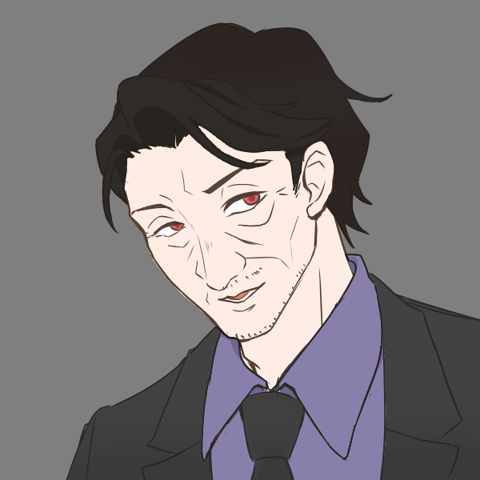

Onymous Stories??
ユドナリウムをDLする。
ストーリー
日本とスペインを往来する客船「ルシアナ号」
某月某日7人を乗せた船が神戸からリバプールの港へ向け出港した。
各々が様々な思惑を抱える中、ルシアナ号は無事スペインへと到着することができるのだろうか。
キャラクター紹介
キャラクターの選択の後、イントロダクションに進んでください。

毒島 金成
53歳男 ルシアナ号のオーナー、利己的な性格で他人に横暴
葉養 美琴
25歳女 フリーの記者、冷静な性格で合理主義者
秋山 三成
27歳男 九条の秘書、明るく振る舞っているが実は臆病
菅原 あかね
27歳女 弁護士、常に明るく不思議な物言いをする。
イバーラ・R・クルス
23歳男 ルシアナ号の管理者、スペイン人 素直な性格
イントロダクション
艦内マップ
PS
毒島 金成
葉養 美琴
秋山 三成
菅原 あかね
イバーラ・R・クルス
証拠品
ユドナリウムを利用する場合は、こちらを確認しないでください。
毒島 金成
葉養 美琴
秋山 三成
菅原 あかね
イバーラ・R・クルス
誰かの証拠品※指示があるまで開かないでください。
エンド
議論の後最多指名のエンドへお進みください。
同票最多の場合はより上のリンクのエンドを確認ください。
毒島 金成
秋山 三成
葉養 美琴
菅原 あかね
イバーラ・R・クルス
サイドミッション計算
入力フォームへ
事件の真相
解説